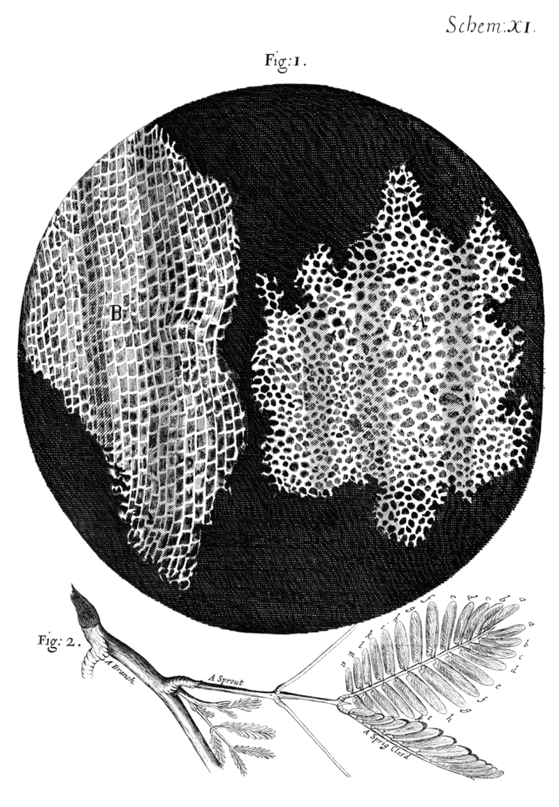
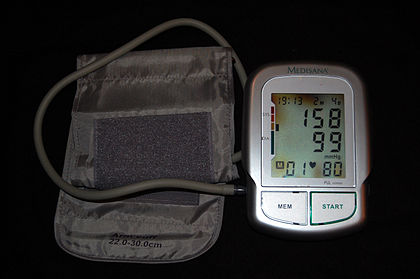

Bài viết chọn lọc
 Lịch sử sinh học là nghiên cứu lịch sử về thế giới sống từ thời cổ đại đến hiện đại. Mặc dù khái niệm sinh học với tư cách là một lĩnh vực độc lập chỉ mới xuất hiện trong thế kỷ 19, ngành khoa học này đã có tiền đề trong nhiều lĩnh vực như y học, dược học cho đến lịch sử tự nhiên, với nguồn gốc từ tận nền y học Ấn Độ cổ đại Ayurveda, y học Ai Cập cổ đại và các tác phẩm của Aristotle và Galen trong thế giới Hy-La. Các tác phẩm cổ đại được phát triển thêm trong thời kỳ Trung Cổ bởi các thầy thuốc Hồi giáo và các học giả như Avincenna. Trong thời kỳ Phục hưng và đầu thời kỳ hiện đại, những tư tưởng sinh học đã được cách mạng hóa ở châu Âu nhờ những quan tâm được làm mới lại trong chủ nghĩa kinh nghiệm và việc phát hiện nhiều sinh vật mới lạ.
[ Đọc tiếp ]
Mới chọn: Rewrite·Vẻ đẹp Mỹ·HMS New Zealand
Lưu trữThêm bài viết chọn lọcỨng cử viên
Bài viết tốt
Nguyễn Văn Thương (2 tháng 5 năm 199 - 5 tháng 12 năm 2002) là một nhạc sĩ, nhà giáo, nghệ sĩ người Việt Nam. Có tác phẩm đầu tay từ năm 17 tuổi vào trước Cách mạng tháng Tám, Nguyễn Văn Thương thuộc thế hệ đầu tiên của nền tân nhạc Việt Nam. Được truyền cảm hứng niềm âm nhạc từ nhỏ, ông sớm tiếp xúc với nền âm nhạc mới trước Cách mạng của Việt Nam. 13 tuổi, Nguyễn Văn Thương nhập học Trường Quốc Học Huế và được đào tạo âm nhạc bài bản từ cả nền âm nhạc phương Tây và âm nhạc cổ truyền phương Đông. Sớm có sự thành công từ những tác phẩm đầu tay, Nguyễn Văn Thương tiếp tục tham gia con đường nghệ thuật Cách mạng. Ông là tác giả của những ca khúc tiền chiến đáng chú ý như "Đêm đông", "Trên sông Hương" và cả những ca khúc cách mạng như "Bình Trị Thiên khói lửa".
[ Đọc tiếp ]
Mới chọn: Bưu điện Hà Nội·Anne de Pisseleu·USS Samuel B. Roberts
Lưu trữThêm bài viết tốtỨng cử viên
Danh sách chọn lọc
Trong thập niên 2000, có 277 đĩa đơn đã đạt vị trí số 1 trên bảng xếp hạng UK Singles Chart, bảng xếp hạng biên tập và tổng hợp bởi The Official Charts Company (OCC), đại diện cho ngành công nghiệp thu âm nước Anh. Bảng xếp hạng công bố hàng tuần trong 7 ngày tính từ Chủ nhật đến thứ Bảy, và 40 đĩa đơn trong bảng xếp hạng được công bố mỗi chủ nhật trên sóng phát thanh BBC Radio 1. Trước sự ra đời của dịch vụ tải nhạc kỹ thuật số, việc xếp hạng dựa hoàn toàn vào doanh số bán hàng của các đĩa đơn từ các cửa hàng bán lẻ, nhưng từ năm 2005, sự xuất hiện của loại hình tải nhạc này đã góp mặt vào việc tổng hợp bảng xếp hạng.
[ Đọc tiếp ]
Mới chọn: Trận chung kết UEFA Cup Winners' Cup· Đĩa đơn quán quân Hot 100 năm 2010 (Mỹ)·Quốc gia thành viên Tổ chức Lao động Quốc tế
Lưu trữThêm bài viết tốtỨng cử viên
Bạn có biết
-

- …uống nước ép củ dền làm giảm đáng kể huyết áp của những người bị tăng huyết áp?
- …ngoài là một trong "tứ đại mỹ nhân", Tư Nhị còn được mệnh danh là "đệ nhất bùa yêu" Sài Gòn vào thập niên 1940?
- …phim Rush Hour được xem là nguyên nhân làm cho sáng lập viên của Rotten Tomatoes cho khởi động website này?
- …nữ họa sĩ người Nhật Bản Ando Saeko có niềm đam mê với tranh sơn mài Việt Nam bắt nguồn từ việc bà mua phải hàng kém chất lượng?
Lưu trữBắt đầu bài viết mớiCập nhật